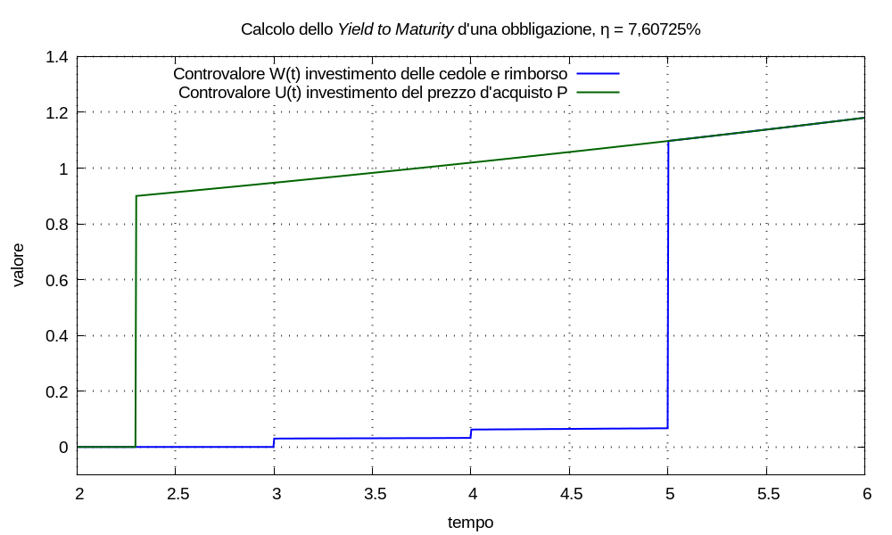

Nell’universo narrativo Marvel Comics alcuni concetti che gl’umani usano per descrivere la realtà trovano personificazione in forma d’entità cosmiche umanoidi; quando una di tali entità risulta essere onnipotente e onnisciente, ma non infallibile agl’occhi umani: è difficile distinguerne la separazione tra l’essere presente nel multiverso ed esserne parte integrante. Tra l’entità piú caratteristiche giganteggia il Living Tribunal che agisce come giudice nelle realtà del multiverso.
Ragionamento:
In questa sezione non discuteremo i criteri con cui il Tribunal stabilisce i prezzi di vendita, ci limiteremo a definirne una descrizione.
Se il Tribunal possiede un titolo obbligazionario: ne incasserà le cedole pagate dall’emittente e il rimborso finale; se venderà il titolo in borsa: rinuncerà a incassare quei capitali che sarebbero stati pagati in futuro rispetto all’istante di vendita.
Vendita del titolo Immaginiamo un universo in cui il Tribunal venda l’obbligazione al prezzo P > 0, da egli stesso deciso, all’istante tP: egli versi s’un multimetro finanziario il capitale P ricavato, come unico movimento; scriviamo la movimentazione e il controvalore del multimetro:
M(t) = P δ(t - tP) U(t) = P u(t - tP) esp[λ (t - tP)]
Possesso del titolo fino a scadenza Immaginiamo un altro universo in cui il Tribunal detenga il titolo fino a scadenza; egli incasserà tutte le cedole che non sono ancora state pagate e il rimborso finale, versando tali capitali s’un multimetro finanziario; scriviamo la movimentazione da applicare al multimetro come:
N(t) = Σk Ccedola,k δ(t - tk) + Crimborso δ(t - tnom)
in cui: le cedole sono indicizzate da k = 0, 1, ...; Ccedola,k è l’entità della cedola pagata all’istante tk > tP; Crimborso è l’entità del rimborso finale pagato all’istante trimborso > tP; è sempre possibile definire un sistema per unità tale che Crimborso = 1.
Senza perdita di generalità, supponiamo d’adottare un’indicizzazione per le cedole tale che t0 sia l’istante piú proiettato verso il passato, cioè ∀ k: t0 ≤ tk. Siccome le cedole sono pagate prima del rimborso o al momento del rimborso: deve risultare ∀ k: tk ≤ trimborso;
Scriviamo il corrispondente controvalore del multimetro:
W(t) = Σk Ccedola,k u(t - tk) esp[λ (t - tk)] + Crimborso u(t - trimborso) esp[λ (t - trimborso)]
Supponiamo che nei due universi alternativi: i due multimetri siano configurati con la stessa remunerazione λ; ci chiediamo: esiste un valore di λ tale che W(t) = U(t) per t ≥ trimborso? In altre parole: esiste un valore di remunerazione tale che applicare al multimetro la movimentazione M(t) e applicare al multimetro la movimentazione N(t) siano operazioni equivalenti agl’effetti futuri?
Ricordiamoci che (vedi attualizzazione): data una combinazione lineare d’impulsi come ingresso d’un multimetro, è sempre possibile attualizzare tutti gl’impulsi allo stesso istante di tempo, ottenendo un singolo impulso, in modo che l’attualizzazione sia equivalente agl’effetti futuri.
Consideriamo l’impulso d’entità P all’istante tP come l’attualizzazione degl’impulsi della movimentazione N(t) all’istante tP; scriviamo l’equazione d’attualizzazione:
P = Σk Ccedola,k esp[λ (tP - tk)] + Crimborso esp[λ (tP - trimborso)]
Poniamo la seguente:
Congettura ytm Nel particolare contesto di questo problema: esiste sempre un valore di remunerazione del multimetro tale che W(t) = U(t) per t ≥ trimborso.
Indicata tale remunerazione con λytm definiamo il corrispondente tasso annuale ηytm = espm1(λytm) come rendimento a scadenza, spesso chiamato Yield to Maturity, ytm.
Se vale la congettura: quali che siano i criteri con cui il Tribunal stabilisce il prezzo P a cui è disposto a vendere un’obbligazione finanziaria, esiste sempre un valore ηytm che descrive tale prezzo in termini di rendimento a scadenza. In parole leggermente diverse: quando il Tribunal stabilisce il prezzo minimo a cui vendere, stabilisce anche il rendimento a scadenza minimo che pretende d’ottenere dalla vendita, che lo convinca a rinunciare all’incasso di cedole e rimborso.
Osservazione Se il Tribunal pretende un certo rendimento minimo ηytm per vendere un’obbligazione rinunciando agl’incassi futuri associati: come otterrà questo rendimento? Immediatamente dopo la vendita si ritrova un capitale P: dove lo investirà per ottenere almeno ηytm?
Possiamo immaginare ch’egli sappia già, al momento della vendita, in quali altre attività economiche investire per ottenere ηytm: perché esistono e sono accessibili; e questo “saper già” è parte dei criteri con cui il Tribunal stabilisce il prezzo minimo P.
In effetti: l’obbligazione stessa, acquistata al prezzo P, garantirà ηytm solo se le cedole e il rimborso finale verranno investite in quell’altre attività economiche.
Allora riformuliamo il ragionamento: siccome esistono altre attività economiche (che abbiamo modellizzato con il multimetro) che garantiscono ηytm, allora vendere al prezzo P o incassare la movimentazione futura sono operazioni equivalenti.
Dovremo ritornare su questo discorso in futuro; probabilmente dovremo coinvolgere anche altre figure di merito degl’investimenti.
Ne deriva la seguente procedura:
P = Σk Ccedola,k esp[λytm (tP - tk)] + Crimborso esp[λytm (tP - trimborso)]
Osservazione (sostituzione di variabile per i tempi) Per il calcolo di ηytm è spesso conveniente applicare una sostituzione di variabile da t a τ con cui l’istante tP corrisponda all’origine dell’asse τ:
t - tP = τ ⇒ t = τ + tP ⇒ tk = τk + tP ⇒ tP - tk = tP - τk - tP = - τkallora l’equazione d’attualizzazione risulta:
P = Σk Ccedola,k esp(- λytm τk) + Crimborso esp(- λytm τrimborso)Ulteriormente, nel caso in cui risulti τk, τrimborso ∈ ℕ, cioè tutti gl’istanti siano esprimibili con numeri interi (positivi per costruzione), posto per comodità di scrittura τk = k e τrimborso = K:
P = Σk Ccedola,k ÷ esp(λytm)k + Crimborso ÷ esp(λytm)K == Σk Ccedola,k ÷ esp(log1p(ηytm))k + Crimborso ÷ esp(log1p(ηytm))K= Σk Ccedola,k ÷ (1 + ηytm)k + Crimborso ÷ (1 + ηytm)Kquesta forma dell’equazione d’attualizzazione s’incontra spesso in letteratura.
Osservazione (equivalenza tra rendimento a scadenza e rendimento effettivo) Ricordiamo che quando abbiamo costruito il modello dell’inserzione a ponte del multimetro (vedi inserzione a ponte) abbiamo ricavato la seguente espressione per l’equilibrio tra gl’ingressi:
0 = Σh Ch esp(- λ τh)in cui C0 < 0 è il capitale utilizzato per acquistare il titolo all’istante τ0 = 0; tal equazione si può riscrivere:
- C0 = Σh > 0 Ch esp(- λ τh)e posto P = - C0 ritroviamo l’equazione che abbiamo scritto qui: lo Yield to Maturity è uguale al rendimento effettivo.
Osservazione (assenza di cedole) Se l’obbligazione è un titolo zero–coupon, cioè che non paga cedole: l’equazione d’attualizzazione si scrive:
P = Crimborso esp[λytm (tP - trimborso)]⇒ λytm = log(P ÷ Crimborso) ÷ (tP - trimborso) == [log P - log Crimborso] ÷ (tP - trimborso)per come abbiamo costruito il modello tP < trimborso, quindi possiamo essere attratti dalla riscrittura:
λytm = [log Crimborso - log P] ÷ (trimborso - tP)Passando alla variabile temporale τ definita prima e riconsiderando un’equazione precedente:
λytm = log(P ÷ Crimborso) ÷ (- τrimborso) = log(Crimborso ÷ P) ÷ τrimborsoda cui:
log(1 + ηytm) = log(Crimborso ÷ P) ÷ τrimborso⇒ ηytm = esp[log(Crimborso ÷ P) ÷ τrimborso] - 1nel caso particolare in cui τrimborso ∈ ℕ: l’esponenziale diventa la radice d’ordine τrimborso dell’argomento Crimborso ÷ P; con notazione da ingegneria del software:
ηytm = root(Crimborso ÷ P, τrimborso) - 1questa forma dell’equazione d’attualizzazione per il caso zero–coupon s’incontra a volte in letteratura.
Esempio Consideriamo un titolo obbligazionario con rimborso Crimborso = 1 all’istante trimborso = 5; il titolo prevede il pagamento delle cedole:
t0 = 3 C0 = 0,03 t1 = 4 C1 = 0,03 t2 = 5 C2 = 0,03il Tribunal ha stabilito il prezzo P = 0,9 all’istante tP = 2,3; vogliamo calcolare il rendimento a scadenza corrispondente a tale prezzo.
Con la sostituzione di variabile t - tP = τ, da cui τP = 0, definiamo gl’istanti:
τ0 = 3 - 2,3 = 0,7 τ1 = 4 - 2,3 = 1,7 τ2 = τrimborso = 5 - 2,3 = 2,7risolvendo numericamente rispetto a λytm l’equazione d’attualizzazione:
P = Σk=0→2 Ccedola,k esp(- λytm τk) + Crimborso esp(- λytm τrimborso)otteniamo λytm ≈ 0,0733179, da cui ηytm ≈ 7,60725%.

La matematica del ragionamento sull’obbligazioni si può estendere a qualsiasi categoria di titoli finanziari o, piú in generale, attività economiche; il problema per quest’altri scenari è che raramente è possibile stimare, con credibilità, la futura movimentazione di capitali.
Nondimeno, gl’investitori ci provano! Tant’è che i prezzi di compravendita delle azioni societarie sono descritti proprio in (complicati) termini di possibili movimenti futuri. Ma non ne discuteremo qui.